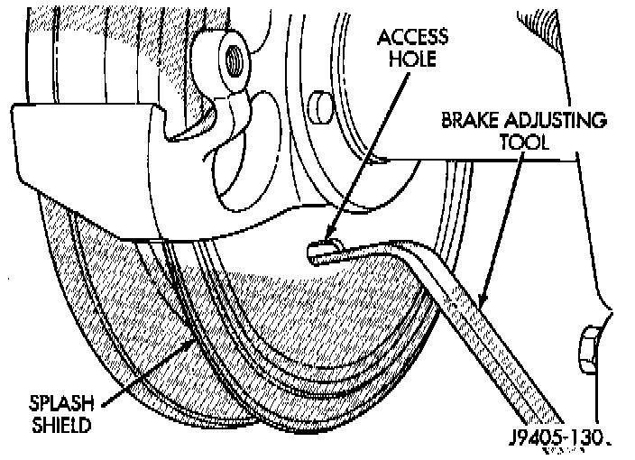

Parking Brake Shoe: Adjustments
1. Remove wheel and tire assemblies.2. Secure rotor with two wheel nuts.
3. Remove rubber access plug from back of splash shield.

4. Insert brake tool through access hole in splash shield. Position tool at bottom of star wheel.
5. Rotate star wheel upward in counterclockwise direction to expand shoes (while facing front of vehicle).
6. Expand shoes until light drag is experienced. Then back off adjuster screw only enough to eliminate drag.
7. Install plug in splash shield access hole.
8. Install wheel and tire assemblies.